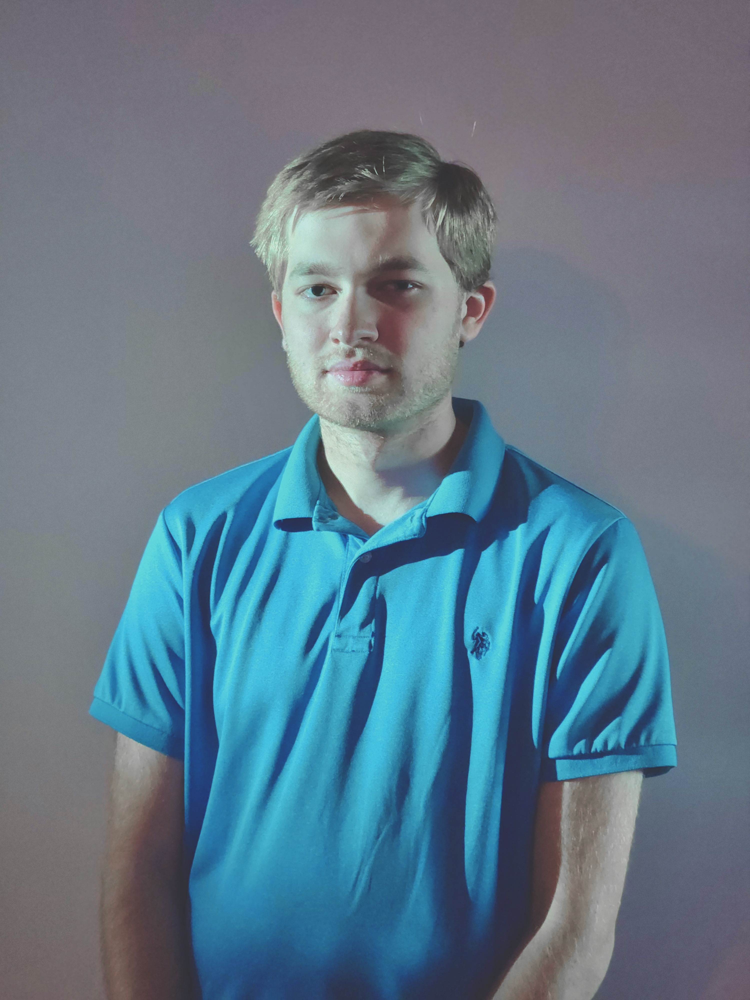

Universal Tech Visions
Universal Tech Visions
Brett Seelig is a Computer Genius from the Montgomery County area. He enjoys exploring the connection between people and their technology, and how he can improve their workloads. His major accomplishments include the Invision OS project which he worked on alongside Evan J.A. McAfee, as well as an absolute plethora of computer repair skills. Brett's current projects include computer refurbishment and resale, the IT degree he is pursuing, and the Invision hardware and repair framework.
